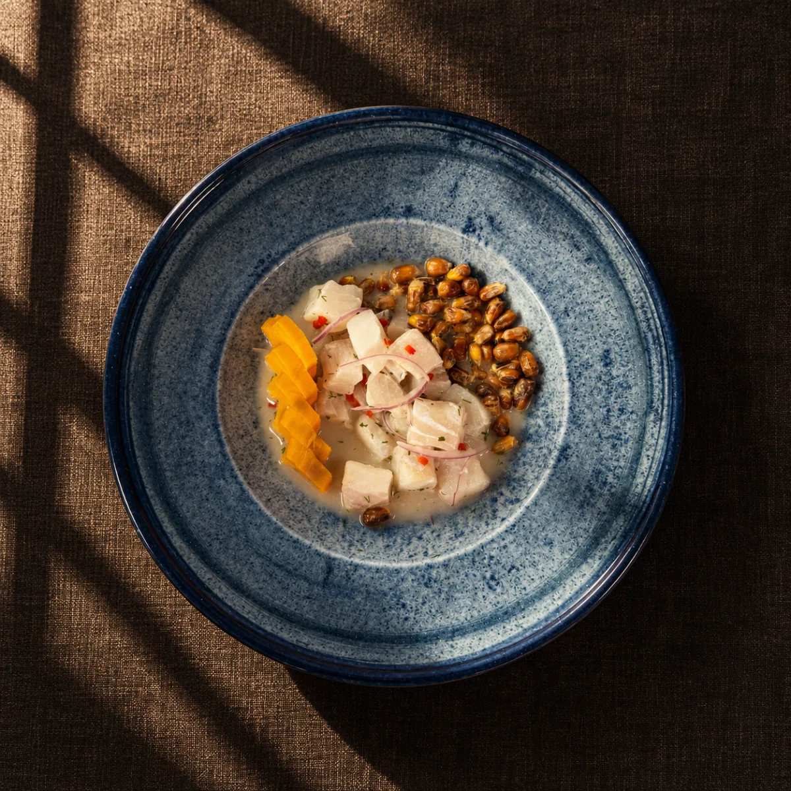
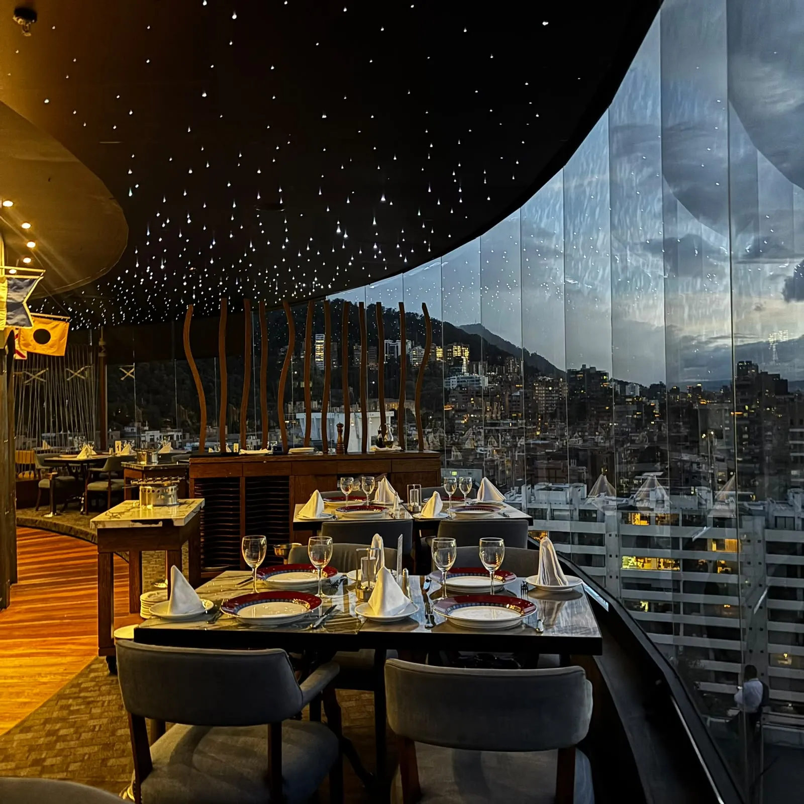
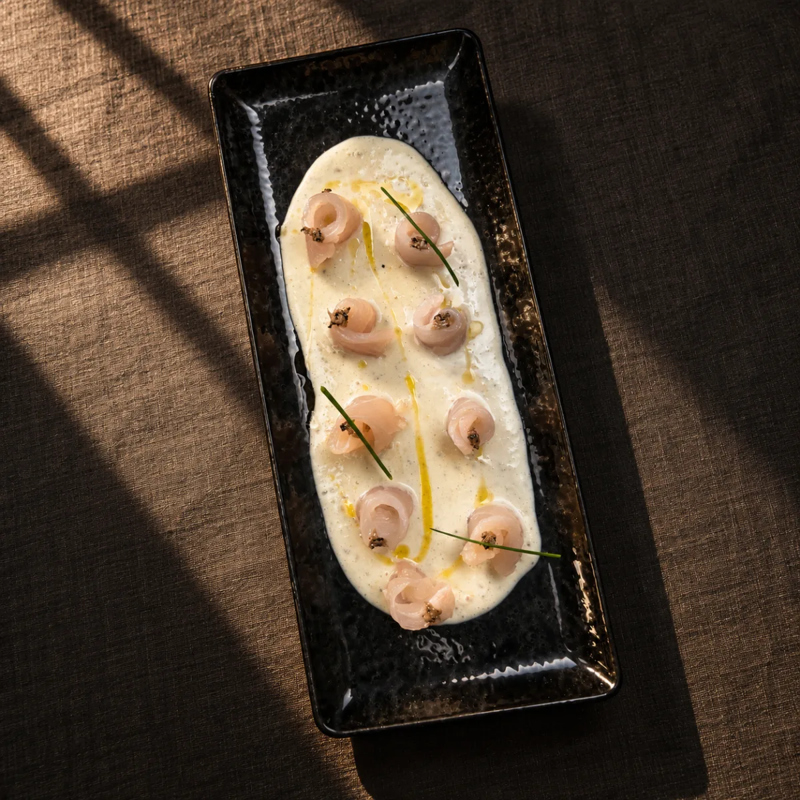

Festival de Ceviches de Alta Cocina
Durante octubre y noviembre, más de 15 platos creados junto al chef peruano Carlos Accinelli para explorar nuevos sabores.
02 · El salón
Primer restaurante giratorio de Alta Cocina en Bogotá.
Un restaurante donde la vista se transforma mientras la mesa permanece, ofreciendo un recorrido de 360 grados por Bogotá.
En el piso 12 de la Torre C del World Trade Center. La familia sirve el mar en Bogotá desde 1964, y el salón gira desde 1991.

03 · El festival
Esta temporada, el ceviche también toma el lugar del plato fuerte.
Una nueva forma de disfrutar el mar. Cómelos con cuchara: aquí la leche de tigre merece estar en cada bocado.
04 · El viaje
Un viaje a la alta cocina
Hace seis décadas comenzó este viaje. Hoy, el viaje continúa para explorar nuevos sabores juntos.
Tres generaciones de una familia. Desde 1964.

Reserva tu mesa
Nuestras puertas están abiertas siempre para ti, pero nunca sobra ser precavido y reservar una mesa.
- Horario
- Lunes a sábado
12 m a 10 p. m. - Domingo
12 m a 5 p. m.